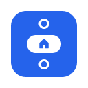
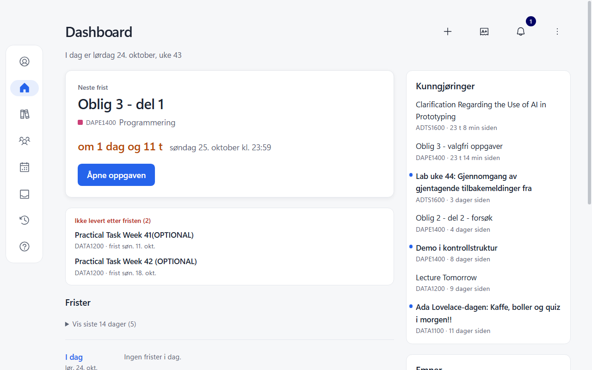
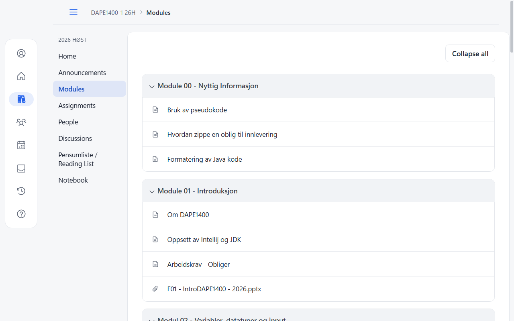
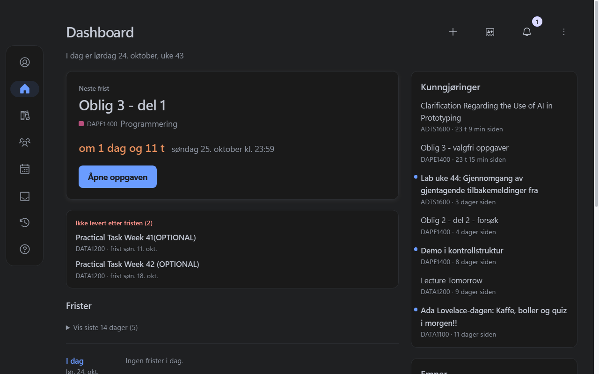

Neste frist øverst
Nedtelling til neste innlevering, og en tidslinje med en «Nå»-linje som viser hvor du er i uka.

En gratis Chrome-utvidelse som rydder opp i Canvas LMS og viser neste frist øverst på dashboardet.
Gratis i Chrome Web Store. Virker på Canvas hos Instructure, og på skoler med eget Canvas-domene.

Funksjoner
Canvas har alt, men viser alt like høyt. Bedre Canvas løfter frem det viktigste og lar resten tre tilbake.
Nedtelling til neste innlevering, og en tidslinje med en «Nå»-linje som viser hvor du er i uka.
Oppgaver du ikke har levert står for seg, og du huker av gjøremål rett i oversikten.
Hvert emne, hver gruppe og hver side i historikken får en fargebrikke, så du finner riktig fag med et blikk.
Moduler, oppgaver, karakterer, kalender og innboks med lik og lettlest typografi.
Velg lyst, mørkt eller automatisk tema. Byttet tones mykt over, uten å blinke.
Bruker fargene skolen din har i Canvas, eller en farge du velger selv.
Emnene dine
Modultitlene står tydelig, elementene under er rolige, og kursmenyen viser hvor du er.

Mørkt tema
Mørkt tema demper hele Canvas, mens bilder, video og emnefargene beholder fargene sine.

Personvern
Bedre Canvas samler ikke inn, selger eller deler noe. Fristene og emnene dine hentes fra Canvas-nettstedet du allerede er logget inn på, og vises bare i nettleseren din. Ingen analyse, ingen sporing.
Les personvernerklæringenÅpen kildekode
All koden ligger på GitHub under GPL-3.0. Se hvordan den virker, meld feil, eller bidra med forbedringer.
Bidra på GitHubGratis, og på plass med en gang du åpner Canvas.